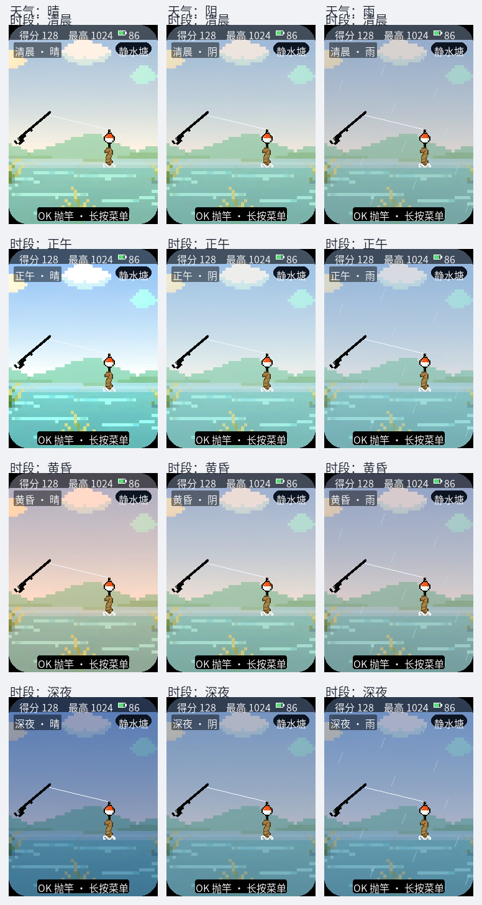
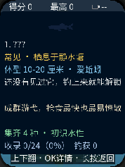
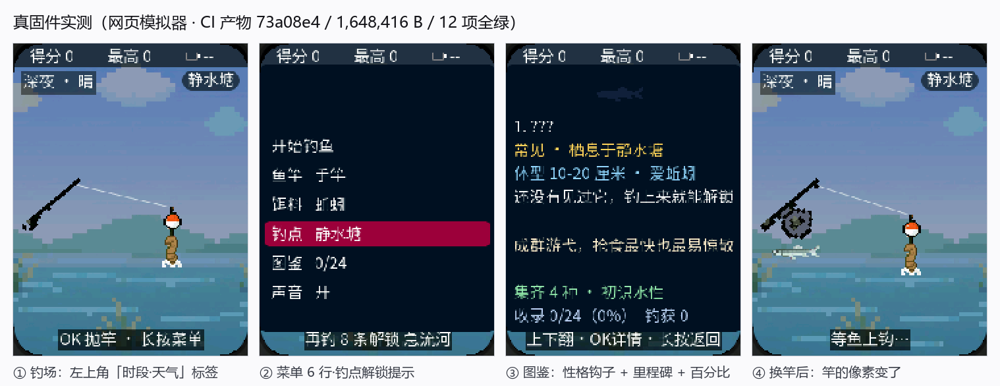

| 改进项 | 状态 | 说明 |
|---|---|---|
| A 鱼的性格 lore | 已完成 | 24 鱼种各一句性格/故事钩子；图鉴详情页新增「性格钩子」行；纯文案，零美术。 |
| B 钓点时段/天气 | 已完成 | 四时段 × 三天气纯视觉：背景染色层 + 静态雨丝 + 左上角「时段·天气」标签。 |
| D 收集里程碑 | 已完成 | 图鉴页新增里程碑行；进度行加百分比。纯文本提示，无奖励数值。 |
| C 每日挑战 | 未做 | 手册标注「次要/可选」。理由与后续做法见第五节，待裁定。 |
| 附带修复 | 已完成 | 发现并修复一处既有缺陷：面板容器默认内边距导致全部子元素偏移 13px，连带三处可见错位。 |
图鉴原本只有一句客观简介（desc：长什么样、多大）。这次给每条鱼补一句
性格钩子（lore：这鱼什么脾气、有什么故事）。两者刻意分开：
desc 回答「能不能钓」，lore 回答「想不想钓」。
fish_species_t 增加 const char *lore；SPECIES[] 24 条各填一句。g_cdx_lore，压在简介之下、里程碑之上，奶油色区分于其他行。示例：鲈鱼「横冲直撞的狠角色，钩住就别想松口」／旗鱼「传说中的深海霸主，八万克巨物，唯海竿远投可遇」
本机是纯离线玩法：全仓无 RTC、无 SNTP，固件里唯一能拿到的时钟是开机以来的单调毫秒。因此定义一条 钓鱼日：1 个游戏小时 = 1 分钟真实时间，24 个游戏小时 = 1 个钓鱼日（现实 24 分钟走完一昼夜）。 天气按钓鱼日序号做整数散列，同一天永远是同一种天气，隔天轮换（晴 60% / 阴 25% / 雨 15%）。 重启后重新计时 —— 离线设备没有别的时间可依。
s_env_key：时段与天气没变则一个 LVGL 调用都不做。
时段 × 天气 全矩阵（3 列：晴/阴/雨；4 行：清晨/正午/黄昏/深夜），按真机 240×320 坐标渲染。
原始文件：assets/preview/05-env-matrix.png；单张原图：env-morning-clear.png /
env-dusk-rain.png / env-night-clear.png。
g_cdx_mile：下一个里程碑名 + 集齐它需要多少种。
名号梯度：4 初识水性 / 8 渐入佳境 / 12 半塘好手 / 16 远近闻名 / 20 一方霸主 / 24 竿影大成。FISH_SPECIES_COUNT 派生，将来加鱼不必改这里。
真机（网页模拟器跑 CI 产物）渲染的图鉴详情页。自上而下：名称 / 金色最大纪录 / 蓝色体型与饵料 / 白色简介 / 奶油色性格钩子 / 绿色里程碑 / 浅蓝进度行。
手册与下达书均把 C 标注为「次要 / 可选」，签字栏也写明「A/B（C/D 可选）落地后」交检核。本次未实施， 具体理由与后续方案如下，供裁定：
| 顾虑 | 具体内容 |
|---|---|
| 菜单要挤成 7 行 | 现有 6 行菜单行距 30px，第 7 行落在面板内 y=254，选中条底部 276 已超面板下沿 274。 要加就得把行距压到 26px，等于改动 v2 已稳定的菜单版式。 |
| 要引入每日进度状态 | 「今天的挑战做完了没有」是跨会话状态，需要额外持久化与一套新的状态迁移， 不是加一行文案那么简单。 |
| 实测判据要重做 | 现有模拟器实测按「正好 6 条白字带」定位光标，加到 7 行后导航判据要整体重写。 |
| 与「不堆数值」的风险 | 每日挑战天然是「限定目标」，做不好很容易变成限时惩罚 —— 与任务书「不把加内容做成堆数值惩罚」相抵。 |
后续建议：把 C 单独作为一轮做，且先定两件事 ——（1）菜单入口是否接受行距压缩，或改用别的入口 （例如钓点胶囊内的次级入口）；（2）每日挑战给的是奖励还是纯荣誉榜。这两条定了我再做， 可以做得比现在更稳。D 项的里程碑已经提供了复玩目标感，不至于空窗。
lv_obj_create() 的默认样式带约 13px 内边距，而面板子元素的坐标是相对内容区的。
v2 的五个面板（场景 / 收线 / 结算 / 菜单 / 图鉴）都没显式清零，于是所有子元素都比源码写的坐标
往右下偏约 13px；而布局检查器只加父级 x/y、不计父级内边距，所以一直报「通过」，实机却是错的。
lv_obj_set_style_pad_all(...,0,0)，坐标从此名副其实。| # | 红线 | 自检结果 |
|---|---|---|
| 1 | 三层分离不破坏 | 通过 时段/天气/里程碑全在 UI 层（fishing.c），逻辑层未沾。 |
| 2 | 不动整屏重画优化 | 通过
set_text_cached / set_img_by_key / 各面板 s_* 门闸 /
show_only 全部原样；新增控件一律走 set_text_cached + 自己的 s_env_key 门闸。 |
| 3 | 不改 fishing_logic.c 平衡数值 | 通过
去掉字符串后全文件 545 个数字 token 逐个一致，24 条 desc 逐字一致；
只在结构体加 lore 字段并填 24 句文案。 |
| 4 | sprite 原图不进固件、须 RGB565+抖动 | 通过 本轮未新增任何图片资源，氛围全部用 LVGL 图形与现有素材实现。 |
| 5 | 图鉴 ID 不重排、不写死 24 | 通过
里程碑末档由 FISH_SPECIES_COUNT 派生；图鉴仍按 FISH_CODEX_CAP 64 预留。 |
| 6 | 改 schema_ver 必写 migrate | 通过
FISHING_SCHEMA_VER 保持 1：存档序列化的是计数/标志/最佳体长，不含鱼种结构体，
加字段不改变存档格式；旧存档照读。 |
| 7 | 禁「小锐 / 锐胜 / 短剧」 | 通过 全仓 grep 0 命中（原有 5 处颜色注释改为「高亮红」，仅注释，不改色值）。 |
| 8 | 不切错分支 / 不用 git add -A | 通过
全程 fishing-app；每次提交前看全量 git status，只用显式路径 add。 |
| 9 | 不把加内容做成堆数值惩罚 | 通过 A/B/D 全为文案与视觉增量，未改任何数值、未加限时、未加惩罚。 |
| # | 清单项 | 自检结果 |
|---|---|---|
| 1 | 命名 | 通过 全仓 grep 0 命中。 |
| 2 | 不抄袭 | 通过 lore 自研；氛围为原创配色与自制雨丝，未克隆任何社区素材。 |
| 3 | 界面对比图 | 通过
assets/preview/05-env-matrix.png（时段×天气全矩阵）、assets/preview/04-codex.png（图鉴新版）、
assets/verify/sim_00_evidence.png（真固件实测）。 |
| 4 | 字库 | 通过 重生成 508 字形，
check_cjk_coverage.py 判定 0 缺字，屏上文案单行宽度全部在屏宽内。 |
| 5 | LVGL | 通过 新增控件均为 lv_obj_create +
set_text_cached；染色层与雨丝为常驻层，置于场景面板之下；未在 LVGL 任务外调用
lv_obj_*；已画值门闸到位。 |
| 6 | Flash | 通过 本轮零新增图片；固件 1,648,416 B， 较上一版 1,648,352 B 仅 +64 B（字库增量）。 |
| 7 | 难度 | 通过 A/B/D 均为内容/视觉增量。 |
| 8 | 故事书 | 不适用 本线无故事书页；lore 对齐「鱼有性格」设计意图。 |
| v2 成果 | 核对 |
|---|---|
| 收线小游戏核心玩法 | 未动 状态机、捕捉区、去抖、完美钓获判定全部未改。 |
| 24 鱼种 + 3 竿 + 3 钓点 + 4 稀有度数值 | 未动 545 个数字 token 逐个一致。 |
| 声音开关 + NVS | 未动 未改 nvs_load_sound/nvs_save_sound。 |
| 长按键菜单 + 输入去抖 | 未动 未改 fishing_hold_sample / fishing_hold_take_stale_click。 |
| 中文化字库 | 仅扩充 419 → 508 字形，0 缺字。 |
| 整屏重画优化 | 未动 门闸与 show_only 原样。 |
| 版本化存档 | 未动 schema 仍为 1，magic 仍为 FSH2。 |
| 浮漂/竿/饵 sprite 已接入 | 未动 位置常量与绘制顺序均未改。 |
| 顶栏布局 + 电量修复 | 未动 仅随内边距修复整体上移 13px，元素间相对关系不变。 |
| 图鉴详情页 | 有增补 名称/纪录/体型/简介四项内容与配色未动，仅新增「性格钩子」「里程碑」两行并整体上移腾位（任务书 A/D 明确要求）。 |
| 钓点解锁门槛提示 | 未动 「再钓 N 条解锁 X」原样。 |
73a08e4）
固件1,648,416 B，sha256 beac1329…，3 段镜像
真固件实测网页模拟器 12/12 全绿（含新增的「时段·天气标签」「图鉴 lore 与里程碑两行」两条判据）
设备实测未做 本机无串口设备，未烧录、未上真机验证

真固件（CI 产物）实测的四个关键画面：钓场氛围标签 / 菜单 / 图鉴新布局 / 换竿后画面变化。
竿影浮标 v3 改进 · 交付报告 · 分支 fishing-app · 提交 e9407cc / 73a08e4 · 待 AIpp总监检核